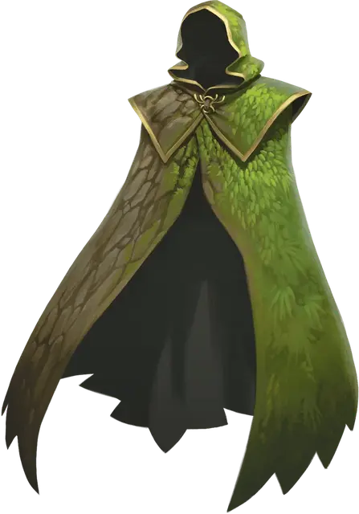

Мантия природы
Nature’s Mantle
Чудесный предмет, необычный (требуется настройка друидом или следопытом)

Рекомендованная стоимость 101-500 зм
Этот плащ меняет цвет и текстуру для смешения с окружающей вас местностью. Пока вы носите плащ, вы можете использовать его в качестве заклинательной фокусировки для ваших заклинаний друида и следопыта.
Пока вы находитесь в слабо заслонённой области, вы можете использовать действие Засада бонусным действием, даже если за вами непосредственно наблюдают.